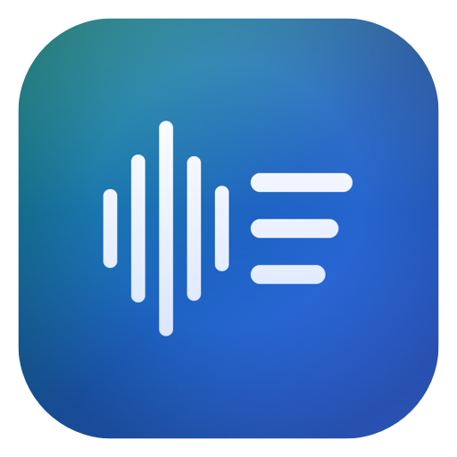

Mac app · Apple Silicon · macOS 14+
Transcribe audio & video — entirely on your Mac.
Tscribe turns lectures, student feedback, and interviews into accurate, word-timed transcripts — now with on-device speaker identification and full-text search. Everything runs on your Mac with whisper.cpp and Metal; nothing is ever uploaded.
Version 2.1.2 · Free & open source · Apple Silicon Mac (M1 or later) · macOS 14 Sonoma or later.
~41 MB download — it fetches its 2.9 GB speech model once on first launch, then runs entirely offline.
Under the hood
Built to keep your recordings yours.
Private by design
No uploads, no accounts, no cloud. Every second of audio is processed on your machine and never leaves it — safe for student voices, oral exams, and IEP recordings.
Speaker identification
New in 2.0: Tscribe tells speakers apart and groups the transcript into color-coded dialogue turns — all on-device. Name each voice, or reassign any line by hand, and every export keeps the labels.
Updates itself
New in 2.1: Tscribe checks for new releases and updates itself in place — no re-downloading the disk image or dragging to Applications again. Your speech model and saved transcripts stay right where they are.
Word-level timestamps & confidence
A timestamp for every word — jump straight to any moment or pull clean captions — and each word is color-coded by confidence, so you can see at a glance which ones to double-check.
Find anything, fast
Search a transcript by word or speaker with ⌘F — filtered down or highlighted in context. Library-wide search scans every saved transcript at once and drops you at the exact moment.
Real-world timestamps
Actual Time reads a video's burned-in clock with on-device OCR and anchors the transcript to it, so timestamps show when things were really said — ideal for recorded meetings and hearings.
Metal-accelerated
Powered by whisper.cpp (large-v3) with Metal GPU acceleration, so a full class period transcribes in minutes, not hours.
Audio and video
Drop in a recording or a video. Tscribe converts video to 16 kHz mono with AVFoundation, then transcribes either one.
Edit, then export anywhere
Fix any wording right in the app, then export to Word, PDF, Rich Text, or plain text — plus SRT and VTT subtitles for video captions.
Speaks many languages
The large-v3 model understands 90+ languages, so world-language classes and multilingual students are covered too — not just English.
A look inside
See it in action.
In the classroom
Made for teachers.
Built by a chemistry teacher for the recordings that pile up every semester.
- Caption lecture videos
Generate captions for flipped-classroom and absent-student videos without shipping footage to a third party.
- Student feedback & oral exams
Transcribe recorded feedback, presentations, and oral assessments into text you can grade and keep.
- Accessibility & IEP accommodations
Provide transcripts as an accommodation — hearing access, note-taking support, language scaffolds — and turn a recorded IEP or staff meeting into searchable notes, all with audio staying private.
- Discussions & meetings
With speaker identification, Socratic seminars, group work, and IEP or staff meetings come back as labeled dialogue you can search by name — see who said what, then jump straight to it.
Before you install
What you'll need.
- Mac
- Apple Silicon (M1 or later) — Intel Macs aren't supported
- macOS
- 14 (Sonoma) or later
- Memory
- 8 GB RAM (16 GB recommended for long recordings)
- Disk
- ~6 GB free for the first-launch model download (settles to ~3 GB)
- Internet
- Once, at first launch, to fetch the model — never for transcription
- Version
- 2.1.2 · released July 2026
- License
- Free & open source
Two editions, one app
Pick your download.
Same complete app either way — the only difference is whether the speech model downloads once or ships inside.
Standard
Downloads its ~2.9 GB speech model once on first launch, then runs 100% offline. Best for most people.
Download Standard →Complete
The speech model is already bundled inside — works offline from the very first open, with no first-launch download. Good for locked-down or offline Macs.
Download Complete ↗Either way, your recordings and transcripts never leave your Mac. The Standard download only fetches the app's own speech model (from Hugging Face) — your audio and transcripts are never uploaded.
Getting started
Install in about a minute.
- Open the downloaded .dmg and drag Tscribe to your Applications folder.
- Double-click Tscribe to open. The first time, macOS may ask you to confirm you want to open an app downloaded from the internet — click Open. That's it.
- Let it finish setting up. The first time you open the Standard edition, Tscribe downloads its speech model (~2.9 GB) once — keep your Mac online for that first run. Every transcription after that is fully offline. (The Complete edition skips this — the model is already inside.)
Signed & notarized by Apple. Tscribe opens like any other Mac app — no Gatekeeper workarounds needed. The full source is still on GitHub, so you can read exactly what it does before you run it.